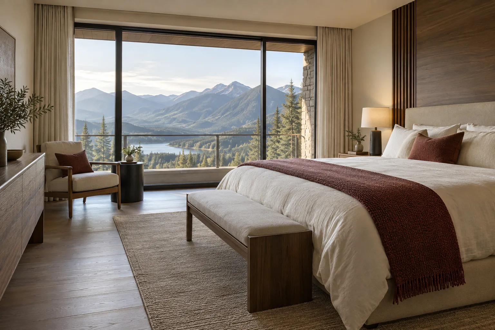

03 / Habitaciones · Guía independiente
El descanso
tiene sus detalles.
La categoría dice algo sobre una habitación. Su orientación, distribución y relación con los espacios comunes completan la información que necesitás para compararla.
Categorías: mirar más allá del nombre
Las denominaciones cambian entre establecimientos. “Superior”, “deluxe” o “suite” no describen una medida uniforme. Compará datos concretos: superficie utilizable, distribución, camas, ventilación y separación entre zonas de estar y dormir.
Si partiste de 1Win Hotel, evitá deducir una categoría por la expresión de búsqueda. Solicitá la descripción de la habitación específica y distinguí lo que está confirmado de lo que muestra una imagen general.
- Habitación estándar
- Suele reunir descanso y un pequeño apoyo de trabajo o equipaje en el mismo ambiente. Mirá si la distribución permite circular sin mover muebles y dónde queda el baño respecto de las camas.
- Habitación de categoría superior
- La diferencia puede estar en superficie, vista, piso o equipamiento. Preguntá cuál de esos atributos está garantizado; un nombre distinto no necesariamente implica más silencio.
- Suite
- Puede sumar un estar separado o ampliar el ambiente principal. Confirmá si existe una puerta entre sectores, especialmente si dos personas necesitan horarios distintos.
- Habitaciones comunicadas
- Si están disponibles, pueden permitir compartir una estadía manteniendo dos unidades. Verificá la conexión efectiva: dos cuartos contiguos no son necesariamente comunicados.
La vista no cuenta toda la historia

Una habitación orientada hacia el paisaje puede recibir luz de mañana o de tarde; una que mira al interior puede quedar cerca de un patio activo. La elección depende de tus prioridades. Preguntá por oscurecimiento, ventilación y posibilidad de regular la temperatura, sin suponer prestaciones universales.
Para descansar, sumá al plano la posición de ascensores, puertas de servicio y salones. También conviene conocer si hay obras o eventos previstos. El aislamiento no se puede certificar a partir de una fotografía: pedí información específica y evitá interpretar “vista abierta” como sinónimo de tranquilidad.
Accesibilidad: una cadena completa
La accesibilidad empieza antes de la puerta de la habitación. Un baño adaptado no resuelve por sí solo una entrada con escalones, un ascensor pequeño o un recorrido demasiado largo. Describí tus necesidades y pedí respuestas sobre el trayecto completo.
Según lo que necesites, consultá ancho de paso, espacio junto a la cama, tipo de ducha, barras de apoyo, altura de interruptores y señales visuales o auditivas. Las expresiones “accesible” y “adaptado” deben acompañarse de características verificables.
Si utilizás apoyos personales o viajás con alguien que necesita asistencia, preguntá cómo se organiza la llegada y a quién acudir dentro del edificio. Esta guía no certifica habitaciones ni reemplaza una evaluación individual de necesidades.